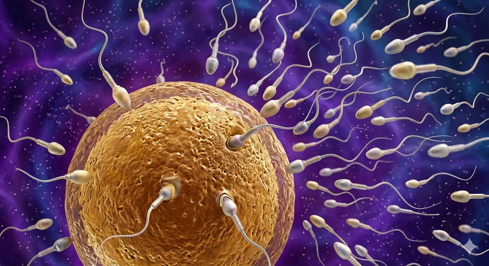

До фемінізму через біологію
На зорі статевого розмноження всі гамети були рівними і вкладалися в потомство однаково. Потім одні почали шахраювати. Розбираємося, як біологія обґрунтовує фемінізм краще за будь-який маніфест.

Десь на коралових рифах два плоских черв'яки наближаються один до одного й починають послідовно обмацувати одне одного. Через деякий час вони стають дибки й оголюють свої пеніси, якими починають… фехтувати.
Причина в тому, що ці черви — гермафродити. У результаті дуелі, що триває до години, вони з'ясовують, кому доведеться взяти на себе всі витрати з виношування потомства. Перемагає той, хто перший кілька разів вколе суперника й уведе йому сперму, тим самим запліднивши опонента, що прирікає його на роль «самки».
Виходить, самкою плоскому черв'якові бути не хочеться? Чому? У чому суть ролей «самки» та «самця» з погляду еволюційної вигоди, витрат і стратегії розмноження?
Сучасною культурою та релігією, а також етологами минулого часто розглядалося, що статева поведінка, копуляція і ритуали залицяння, що їй передують, — це спільна активність обох партнерів на благо себе або виду1. Однак еволюційна реальність статевих стратегій далека від цього ідилічного образу.
Що таке «самець» і «самка»? Ми, як ссавці, і, визнаємо, будучи антропоцентристами, зазвичай асоціюємо їх із наявністю пеніса чи молочних залоз, процесом виношування та хромосомними відмінностями. Але в більшості видів усе інакше.
Як пише Річард Докінз у книзі «Егоїстичний ген»2, у самців і самок жаб практично немає зовнішніх відмінностей, окрім розміру гамет, тому їх можна було б позначити як стать 1 і стать 2. Однак універсальна відмінність стосується всіх видів, зокрема рослин: гамети самців дрібніші й численніші, а гамети самок більші й поступаються числом.
Що це означає? Самець не вносить рівної із самкою кількості поживних речовин під час злиття. Гени — так, рівно 50%, але не поживні речовини. Сперматозоїди фактично слугують способом швидкого перенесення генів, тоді як яйцеклітина приносить ще й ресурси для розвитку зародка.
За такої асиметрії самець може потенційно запліднити необмежену кількість партнерок, виробляючи сперматозоїди у величезній кількості, а самка обмежена ресурсами на виношування та турботу про потомство3. Звідси зароджується наша експлуатація.
Уважають, що на зорі статевого розмноження панувала ізогамія — рівні гамети й рівний внесок у поживні речовини для розвитку зародка. Гіпотеза полягає в тому, що невелике збільшення деяких гамет давало еволюційну перевагу та дозволяло забезпечити виживаність нащадків із більшою ймовірністю. Однак у цій стратегії крилася і ахіллесова п'ята. Вона відкривала можливість для експлуатації та егоїзму. Наявність трохи більших, ніж потрібно, гамет дозволяла дрібним гаметам мати можливість злитися з великими й «заробити» на цьому, а отже, вкластися в потомство трохи менше.
«Чесна» стратегія великих гамет відкрила дорогу «егоїстичній» та «експлуататорській» стратегії дрібних4. У результаті постійної битви вижили й викристалізувалися екстремально великі та чесні альтруїсти, і екстремально маленькі та спритні гамети. Я впевнена, ви здогадалися, кого з них ми тепер називаємо яйцеклітинами та сперматозоїдами.
Не заглиблюючись у подальші перипетії пошуку еволюційно стабільної стратегії (ЕСС), можна з упевненістю стверджувати, що в більшості видів робота з турботи про потомство та забезпечення його ресурсами лягає на самку, особливо у ссавців і нас, людей5. Самка вкладає власні ресурси організму у виношування, зазнає гормональних змін, а після народження забезпечує догляд і годує молоком, яке теж не так просто виробити.
Таким чином, будучи ошуканими на зорі еволюції, ми несемо основне навантаження з продовження потомства виду homo sapiens, при цьому перебуваючи в уразливому становищі на всіх етапах цієї роботи.
І що ж жінки отримали натомість?
Не існує якоїсь об'єктивної реальності чи біологічної зумовленості «хорошої» поведінки і турботи про ближніх або тих, хто несе більше витрат через виношування й турботу про потомство. Це частина міфологеми, такої самої, як і «права людини» або «буддизм», яку наш вид винайшов, намагаючись вижити в нових умовах масового скупчення особин в одному місці в умовах високотехнологічної реальності.
Чому ж замість розуміння фізіології жіночого організму та витрат хоча б на рівні менструального циклу (отриманого в результаті статевого протистояння) і вагітності ми отримали лише зневагу та експлуатацію наших уразливостей, які ми не обирали при народженні? Чому пласти мемів у вигляді культури, релігійних інституцій і цілих політичних стратегій виявилися побудованими навколо тих, чия еволюційна стратегія вкладається у влучну тезу «скинути відповідальність і звалити в закат»?
Біологічна реальність кричить нам про те, яку високу цінність і складність ми собою являємо, яку титанічну ношу на нас поклала сама еволюція. То чому б не дотримуватися цінностей, які дозволять забезпечити репродуктивне здоров'я жінок, а всі особливості нашого організму не ховати за порогом церкви під час менструації чи називати природні процеси «червоними днями» та іншими евфемізмами, а підтримувати й організовувати комфортне та безпечне середовище для кожної?
У результаті еволюції не було «слабких» чи «сильних» статей, не було головних і другорядних ролей, розвиненіших і розумніших чи гідніших частин популяції одного виду. Волею випадку, а саме через різну стратегію гамет, нам довелося взяти на себе більше витрат, ніж чоловікам. Настав час визнати це й відкинути старі форми владних відносин, заснованих на експлуатації уразливостей.
-
Parker, G.A. 1984, Evolutionary stable strategies./In: Behavioural ecology: An evolutionary approach (eds J.R. Krebs and N.B. Davies), pp. 62-84. 2nd edition. Oxford: Blackwell scientific publications. ↩
-
Ричард Докинз, "Эгоистичный ген"; пер. с англ. Н. Фоминой. - Москва: издательство АСТ: CORPUS, 2021 г. ↩
-
Parker, G.A., Baker, R.R., Smith, V.G. F., 1972, The origin and evolution of gametic dimorphism and the male-female phenomenon// Journal of theoretical biology, 36, 529-533 ↩
-
Trivers R. L., The evolution of reciprocal altruism// Quarterly review of biology, 46, 479-484 ↩
-
Trivers R. L., 1974, Parent - offspring conflict// American zoologist, 14, 249-264 ↩